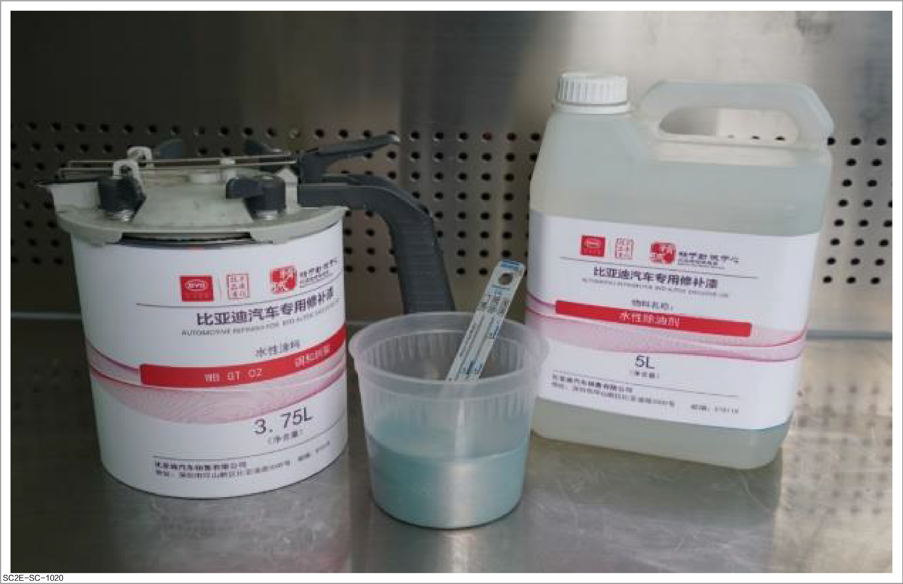
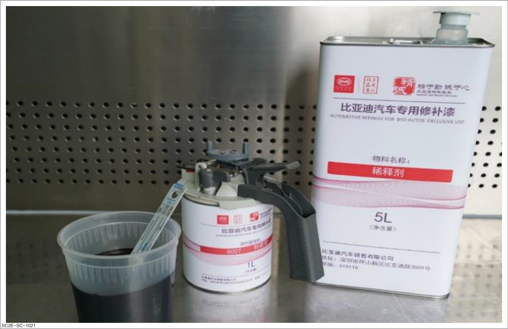
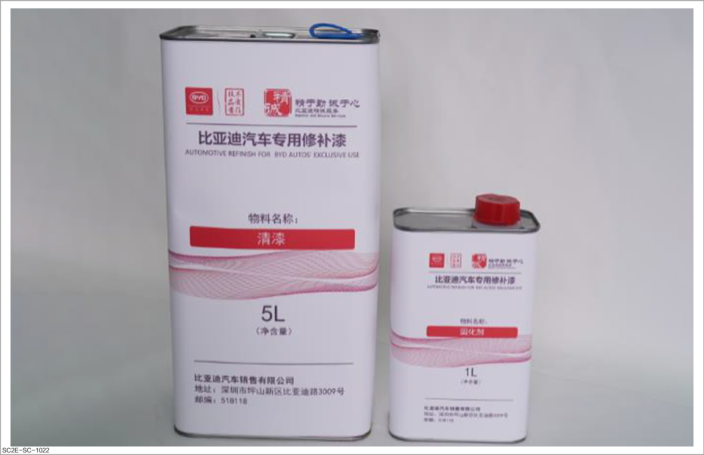
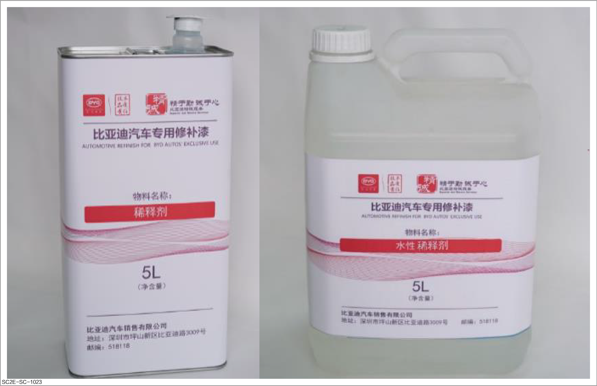

Paint

This document introduces the auxiliary materials involved in spraying. The specific brands and models of auxiliary materials shall be subject to the actual situation.
Water-based color masterbatch paint
-
Purpose: It, as part of the paint, makes the paint reach the correct parameters through the appropriate ratio.

Solvent-based color masterbatch paint
-
Purpose: It, as part of the paint, makes the paint reach the correct parameters through the appropriate ratio.

Varnish and curing agent
-
Purpose: After applying the primer, apply a varnish coating to provide lightness and hardness and avoid coating aging.

Thinner
-
Purpose: It is used to adjust the viscosity of paint so that it can be easily sprayed.
-
Solvent-based thinner on the left: It can still be used in a low-temperature environment, with a slower drying speed and specific requirements for humidity and temperature of the construction environment.
-
Water-based thinner on the right: Due to great temperature limitation, it cannot be generally used below 5°C, as water will freeze at a low temperature, consequently affecting film-forming effect. However, the water-based paint is generally easier to clean under applicable conditions and features good hardness and durability after drying.
-
-
Instructions for use: Select suitable water-based thinner according to the temperature and humidity of the spraying environment before use, and add it in the proportion specified.
